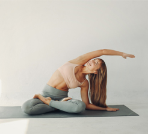
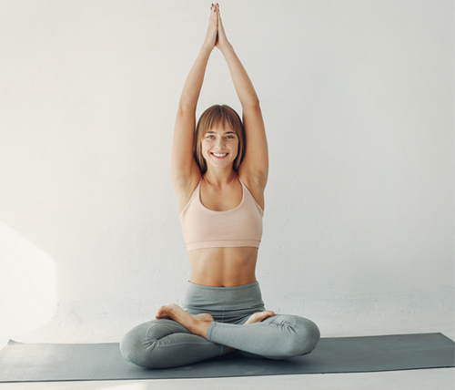
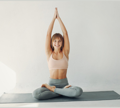
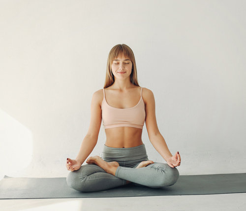

Estructura de una sesión de yoga
calentamiento
Su objetivo es preparar el cuerpo tanto física como mentalmente para el tipo de actividad que vamos a realizar.
Esta fase debe durar entre 5 y 10 minutos.

Parte principal
Se desarrollan ejercicios variados para las diferentes cualidades físicas.
La duración de esta parte es de entre 40 y 45 minutos.


Relajacion
Se trata de volver nuestros niveles normales, relajar los músculos a través de estiramientos profundos y prolongados.
La duración es de 10 minutos.
